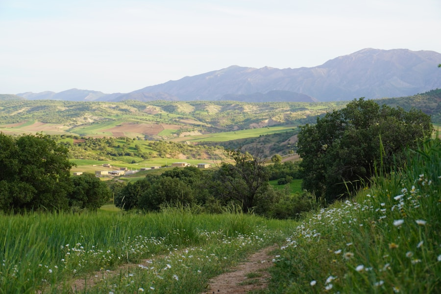
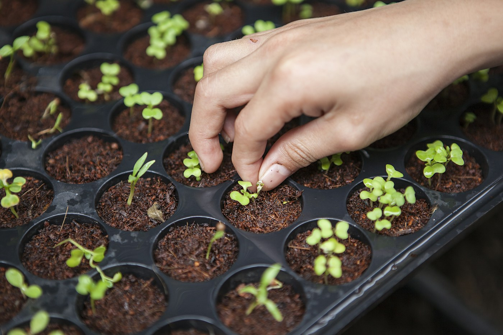
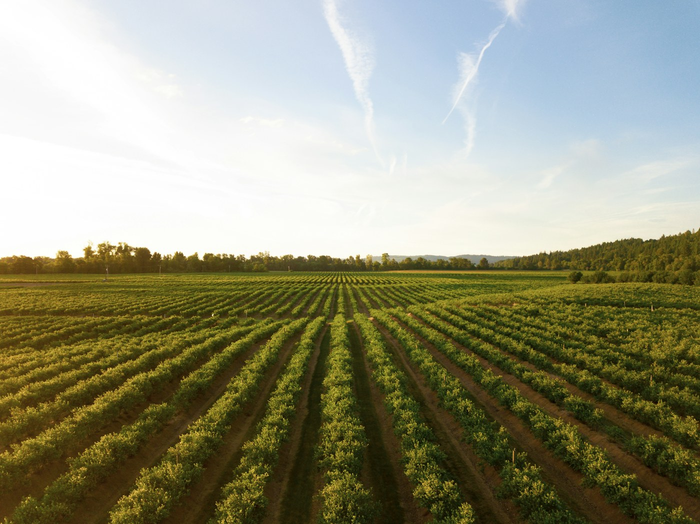

Exportateurs de produits agricoles marocains depuis la région du Saïss
Notre histoire
Ancrés dans la terre du Saïss
Fondée en 2008 à Fès, au cœur de la plaine fertile du Saïss (l'un des greniers céréaliers historiques du Maroc), Les Greniers du Saïss est une entreprise marocaine spécialisée dans l'export de produits de caroube (Kharoub) et de légumineuses. Filiale du Groupe Saïss Céréales, elle bénéficie d'un accès privilégié à des matières premières d'exception et d'un ancrage industriel solide.
Notre activité couvre l'ensemble de la chaîne : réception, conditionnement et négoce de produits agricoles (céréales, semences, légumineuses, aliments de bétail, caroube, oléagineux, plantes fourragères, fruits et légumes frais), ainsi que leur production, leur stockage, leur importation et leur exportation, du marché local à l'international.
Nous travaillons en partenariat direct avec les agriculteurs et producteurs locaux pour garantir la qualité à la source. Pour accompagner cette croissance, nous poursuivons une stratégie de développement ambitieuse : de nouvelles capacités de stockage au plus près des zones d'utilisation, et la création de filiales spécialisées par métier.
Notre développement s'appuie aussi sur l'investissement dans la recherche, en collaboration avec des universités marocaines, ainsi que sur l'acquisition de nos propres terres agricoles pour renforcer notre production locale et maîtriser davantage notre chaîne d'approvisionnement.
Nos valeurs
Ce qui nous guide
Qualité sans compromis
Contrôle rigoureux à chaque étape, de la récolte au conditionnement.
Partenariat durable
Relations de long terme avec nos agriculteurs et nos clients.
Transparence
Traçabilité complète et documentation rigoureuse pour chaque lot.
Innovation
Développement continu de notre gamme pour répondre aux besoins du marché.
Politique Qualité
Une démarche qualité à tous les niveaux
Consciente des exigences d'un marché complexe et de la nécessité de renforcer durablement sa compétitivité, Les Greniers du Saïss s'appuie sur un système de management de la qualité structuré selon les principes de la norme internationale ISO 9001, que l'entreprise s'engage à maintenir et à améliorer continuellement. Cette politique qualité repose sur cinq axes stratégiques :
Satisfaction client
Assurer la satisfaction de nos clients à chaque étape de la relation commerciale.
Performance des équipes
Favoriser la performance et la polyvalence de l'ensemble de notre personnel.
Qualité constante
Maintenir une qualité irréprochable de nos produits et de nos services.
Santé financière
Préserver la santé financière de l'entreprise pour garantir sa pérennité.
Communication interne
Développer la communication interne pour une meilleure coordination entre les équipes.
L'engagement de la direction
Pour atteindre ces objectifs, la direction de Les Greniers du Saïss s'engage à fournir les moyens nécessaires en temps utile et à participer activement au processus d'amélioration continue, en encourageant toutes les idées et initiatives. Le succès de cette politique qualité repose sur la participation active de l'ensemble du personnel, à tous les niveaux de l'organisation.
La région du Saïss
Un terroir d'exception
La plaine du Saïss s'étend entre Fès et Meknès, au cœur du Maroc. Ses sols riches et son climat tempéré en font l'une des zones agricoles les plus productives du pays.
Cette région est réputée pour la qualité de ses céréales et légumineuses. Les caroubiers qui y poussent produisent des fruits d'une richesse nutritionnelle exceptionnelle, prisés par les industries agroalimentaire et pharmaceutique mondiales.


Innovation
Recherche & Développement
Les Greniers du Saïss collabore avec des universités marocaines pour approfondir la connaissance scientifique du caroubier et de ses dérivés. Ces partenariats de recherche portent sur la valorisation nutritionnelle de la caroube, l'amélioration des procédés d'extraction et de transformation, ainsi que le développement de nouveaux produits à forte valeur ajoutée pour l'agroalimentaire, la pharmacie et la cosmétique. Cette démarche scientifique nous permet d'anticiper les besoins de nos clients industriels et de renforcer la position du caroubier marocain sur les marchés internationaux.
Notre exploitation
Nos propres terrains
Au-delà de son rôle d'exportateur, Les Greniers du Saïss a développé sa propre activité agricole. Nous cultivons aujourd'hui plus de 100 hectares en propre, répartis dans plusieurs régions du Maroc et dédiés à la production de caroubiers, de légumineuses et de céréales. Cette intégration verticale nous permet de maîtriser l'ensemble de la chaîne de production, de la plantation à la récolte, et de garantir une qualité et une traçabilité optimales sur une part croissante de nos volumes. En complément de cette récolte propre, nous nous approvisionnons également auprès de producteurs partenaires à travers tout le Maroc, et non plus seulement dans la région du Saïss, pour répondre à la croissance de la demande internationale.

Prêt à sourcer ?
Contactez notre équipe pour un devis personnalisé ou des informations sur nos produits.